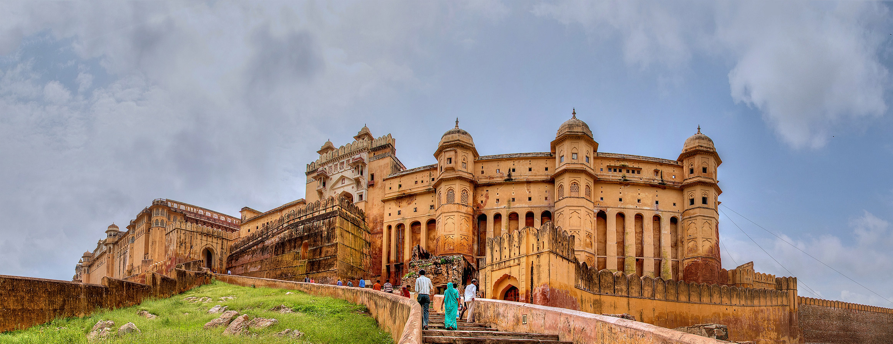
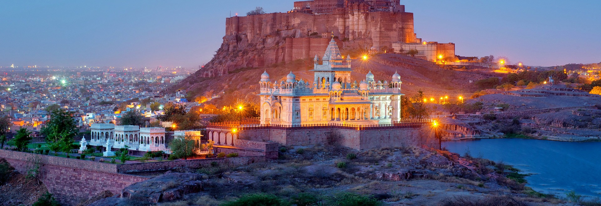

Experience The Heritage of Rajasthan
The City with a Rich History

The Best View One Can Get
Lots of Fun and Recreational Activities

Where Nature Meets The History
The Beauty Of The Nature, The Forts and The Kingdoms